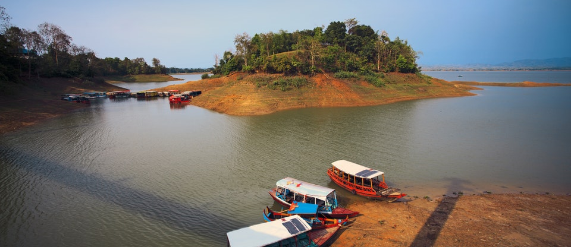

Kaptai Lake
Dotted with islands, Kaptai is Bangladesh's largest artificial lake, created in 1960 for a hydroelectric project. It's a beautiful spot, and very popular with Bengali sightseers, but because of permit restrictions, the number of places foreigners can visit on the lake is constrained. The most popular trip is Shuvalong Falls (90 minutes one way). This modest waterfall is little more than a trickle for most of the year, but the boat trip out to it is fabulous; first crossing the vast expanse of the main lake, then entering an area of islands covered with banana plants, and finally a dramatic pass through a steep-sided gorge. The Hanging Bridge, a low suspension bridge, not far from the Parjatan Holiday Complex, is another popular boat-trip destination. The small Chakma islands at the other end of Rangamati are another popular boat stop, although, like the Hanging Bridge, they can also be reached by land. Another popular trip with local tourists is the two-hour ride to Kaptai Town, but the town itself is a bit of a dump. There are small boat ghats all around the lake, but the main two are Reserve-Bazar Ghat and Tobolchuri Ghat. Passenger ferries shuttle locals from Reserve-Bazar to places such as Kaptai Town. They’re sometimes reluctant to take foreigners, but you can get to Shuvalong Falls for Tk 50 if they let you on. Otherwise, you’ll have to hire your own boat. Prices depend largely on your bargaining skills. At the time of research, Tk 600 per boat per hour was the going rate.